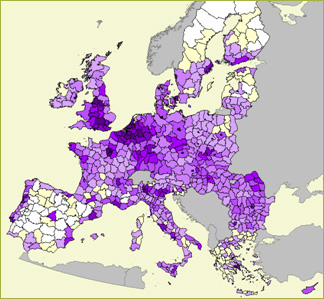
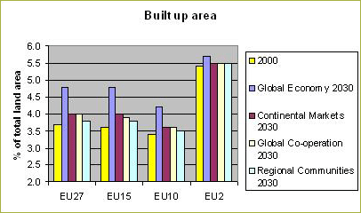
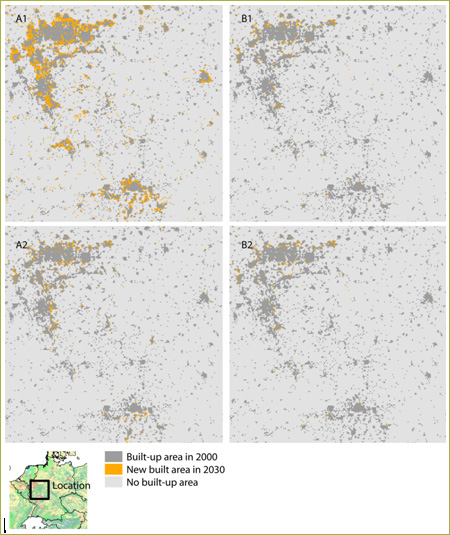

Highlights |
 Figure 1 - Overview of built-up land in EU27. |
Past developments
Urban area in Europe has been showing a steady growth of 4 to 5% each decade:
a trend that set in with the rebuilding of Europe after the Second World War.
The drivers of this expansion are threefold: Intensification of agriculture
and the low economical growth of the agricultural sector lead to migration from
rural areas to the cities; immigrants from outside Europe also moved to the
cities; and with increasing economical growth the area per person grew with
rates around 1 to 2 m2 per person per year. The urban growth generally occurred
in the fringes of existing agglomerations although a few examples of completely
new cities exist (e.g Lelystad, the Netherlands, Louvain la Neuve, Belgium).
Future developments
 |
Figure 2 shows the development of built-up area. This shows
that built-up land is growing fastest in the Global Economy scenario. Important
drivers are the population growth due to immigration in this scenario and
the increasing demand of area per person due to economic growth. The combination
with a spatial policy which is not aimed at compact urbanization leads to
the largest expansion of urban areas as well as a sprawled pattern. The other three scenarios show a more limited growth of built-up area. In the Continental Market and Regional Communities scenarios population growth in Europe is limited as well as the need for extra built-up land. In the Global Coordination scenario, despite the rather strong population growth the increase of built-up land is limited because of more strict spatial policies, which is in line with the spirit of this scenario. |
In Figure 3 the urbanization pattern for the four baseline scenarios shows
that urbanization in all scenarios prefers the current urban fringes.

Figure 3 - spatial patterns of urbanization for the
four baseline scenarios for the Ruhr area in Germany.
Policy effects
The policy options of Eururalis do not influence the amount of land needed for
urbanization, but they do affect the spatial pattern. Spatial planning processes
focus much stronger on urban land-use than, for instance, on agriculture or
natural land use types. Besides the differences in amount of land use change
in urban area the patterns of urbanization differ significantly between the
scenarios because different spatial policies are assumed (Table 1)
Table 1 - urban spatial policies for the different
scenarios
| Global Economy | Continental Market | Global Coordination | Regional Communities |
| No restrictions for spatial urban planning. Autonomous focus of growth of urban centres. High incomes combined with loose regulations may lead to proliferation of second houses in green areas. Sprawled growth | No restrictions for spatial urban planning. Autonomous focus of growth of urban centres. Sprawled growth | Restrictions in urban spatial planning resulting in compact urban growth; growth both in large cities and provincial towns | Restrictions in urban spatial planning resulting in compact urban growth with a focus/incentives for growth of provincial towns. Small villages are targeted to maintain existing size and structure. |
Most important drivers
Like in the past, new urbanization is driven by population growth (immigration
rates for that matter), by rural-urban migration dynamics and by increasing
surface-demands per person. High immigration rates lead to the growth of larger
cities that are generally denser, whereas a migration from urban to rural areas
would lead to more space consumption per person as built-up area is less dense
in rural areas. Differences in the spatial patterns of urbanization are the
result of different preferences for residential areas, competition with other
land use types (such as nature protection) or spatial policies.
Discussion
The results indicate that, depending on the demography and economic growth,
land claims for residential or industrial purposes can be large in Europe. Due
to the historic location of urban areas and the preference for flat lands the
most fertile, productive, agricultural soils are taken out of agriculture for
urban purposes, causing an irreversible loss of production capacity. At the
same time the open landscape is disturbed by urban construction. For the peri-urban
areas it is likely that the functionality of the land use faces changes towards
recreational, tourism and leisure purposes.
Used methodology
Urbanization is simulated within the spatially explicit land use modeling component
based on the Dyna-CLUE model.